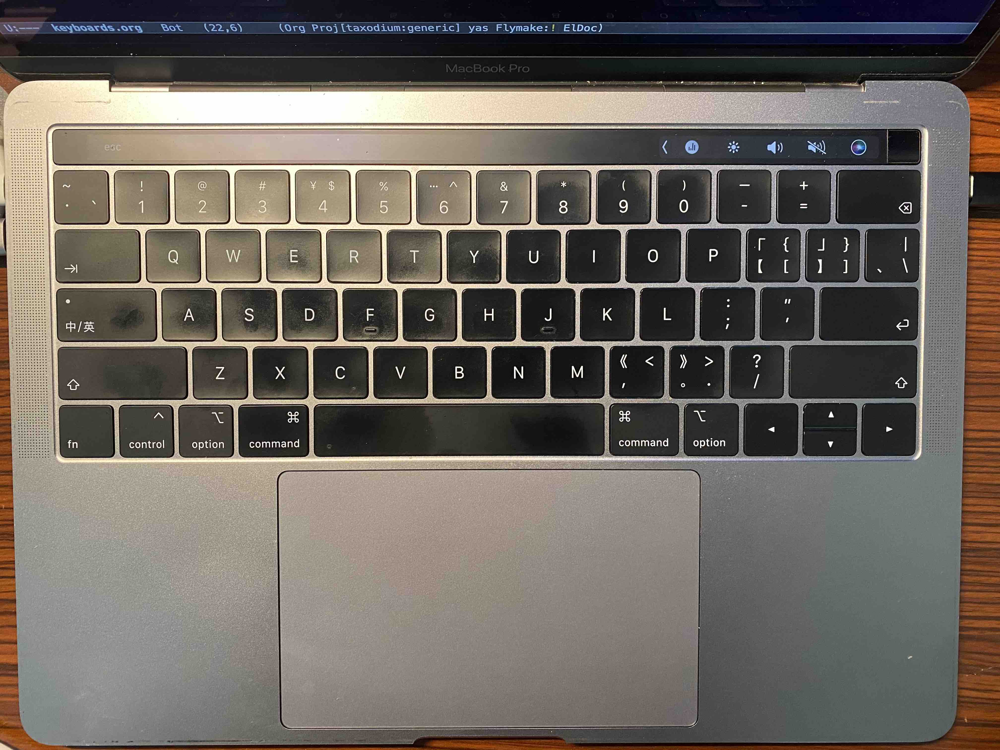
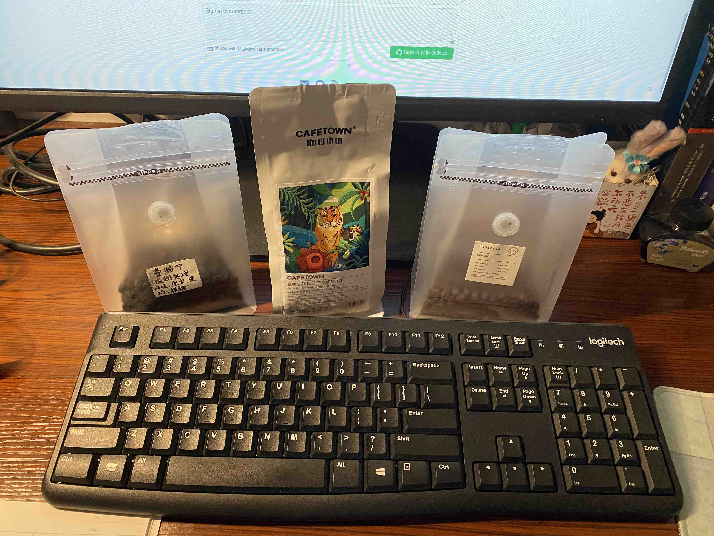
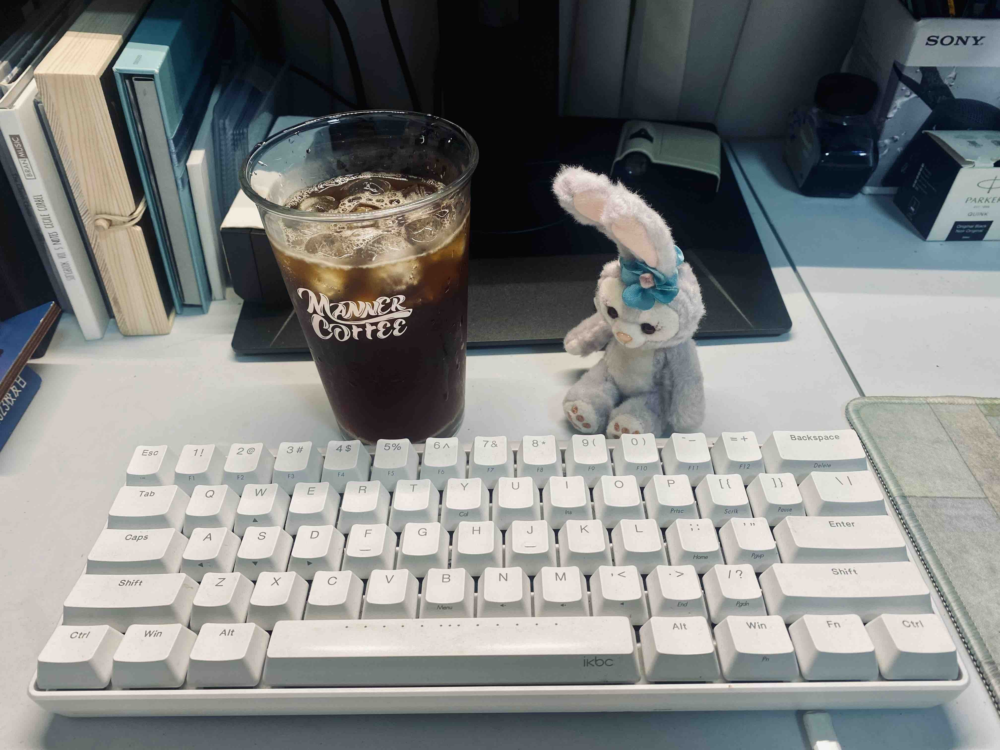
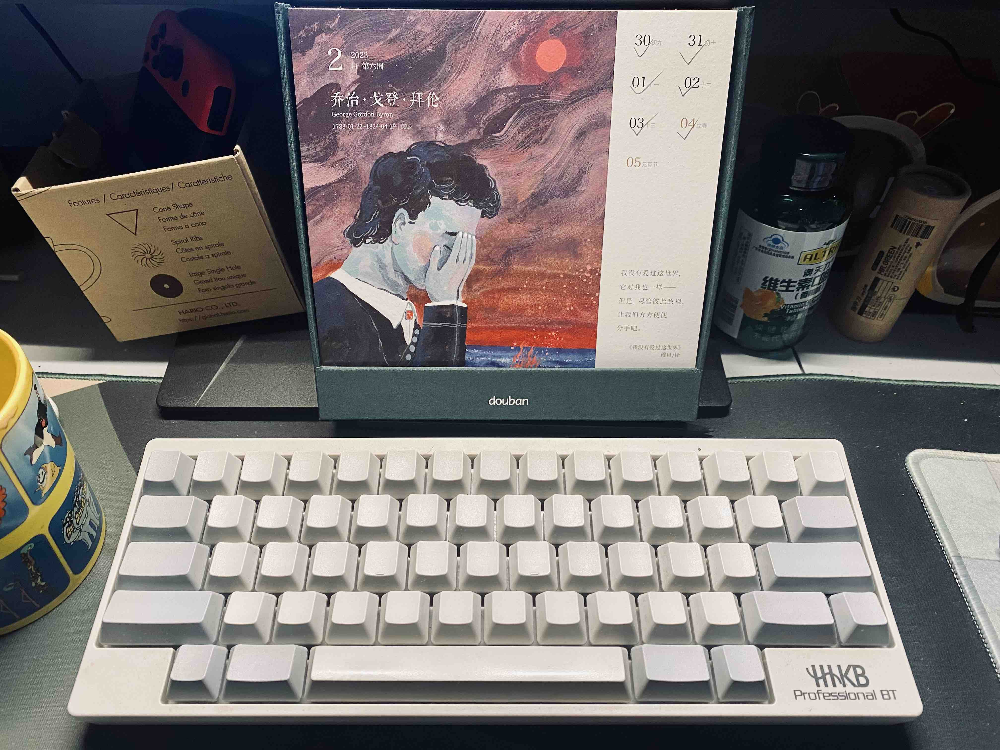
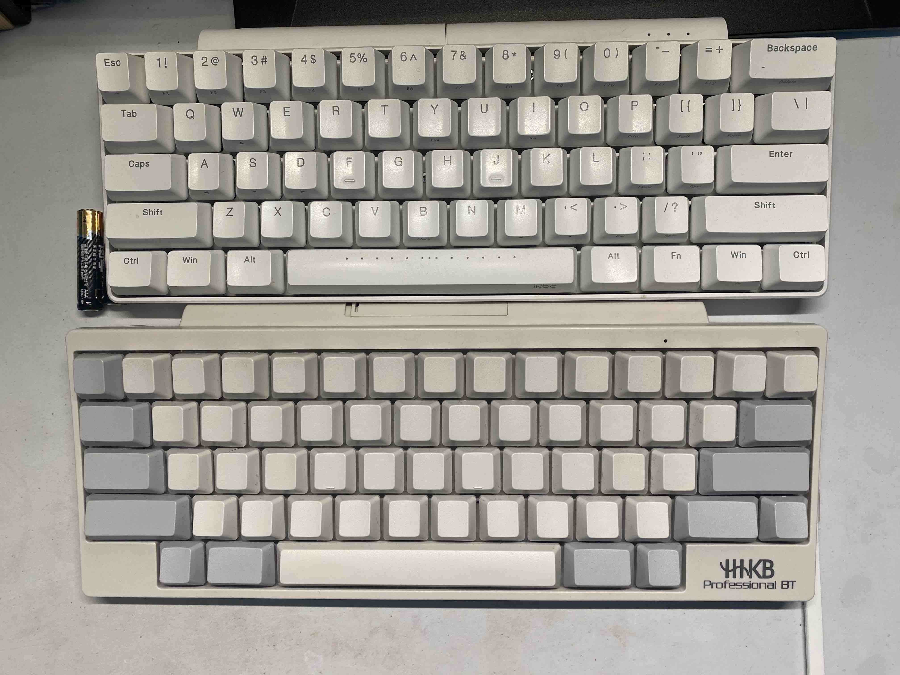
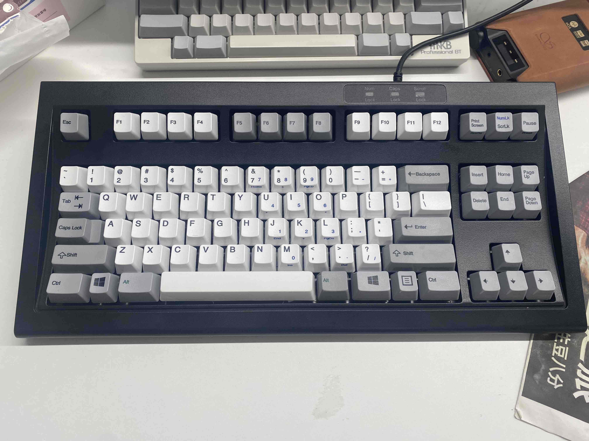
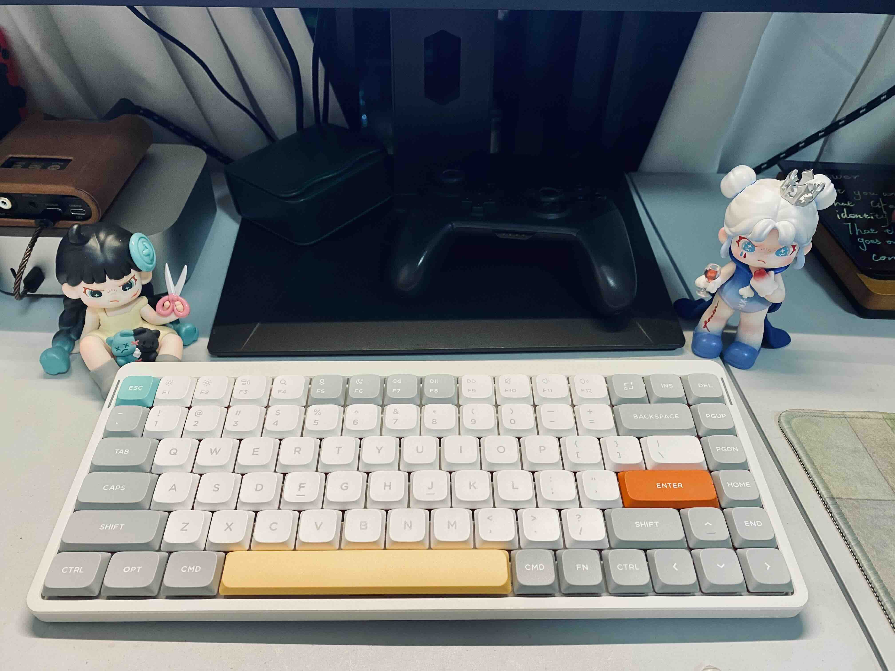

我的键盘
键盘作为程序员的一个生产力工具，我想每个程序员都应该折腾过。
目前我也用过几款键盘，简单分享一下。
笔记本自带键盘
{kind=link}

我的笔记本是 MacBook Pro 2018 的版本，键盘的键程很短，声音比较小。之前不小心把啤酒洒到了键盘上，导致一下按键粘滞感很强，在 AppleCare 快到期的时候去更换了一次，满血复活了。没啥特色，平时需要带电脑出去用的时候还是能凑合用。
罗技 K120 键盘鼠标套餐 (¥60)
{kind=link}

就是公司标配的最便宜的键盘。
之前把一台老旧的电脑安装了 Ubuntu，蓝牙链接有问题，原来的蓝牙键盘不能用，就随便买了一个便宜的键盘接上去用。 K120 相对笔记本键盘而言，还是有那么一点键程的，不过也没有什么手感可言，但毕竟才 60 块不到。
IKBC Pocker (¥299)
{kind=link}

我买过 3 把 IKBC Poker，有红轴，青轴，以及一个新版 Poker。它们都是 68 键的键盘。那时喜欢用 Vim，Vim 讲究的时候键盘操作，我不想手需要移动很大幅度去操作，所以对 68 键的键盘情有独钟。
键盘底下和 HHKB 一样有几个拨键，可以更改一下设置，满足在 Mac 或 Windows 上的一些键位设置，以及交换 Ctrl 和 Caps 键。
红轴买了两个版本，称为老版本和新版本吧。老版本是比较早时候出的，支持编程，可以将按键换成其他键，或者编写一些宏，最常用的就是将左 Ctrl 和 Caps 交换，因为 Caps 基本不怎么用，而 Ctrl 经常按；新版本增加了更多连接方式，可以蓝牙和无线了，但没有了编程功能。手感就是红轴手感，没啥可说的，长时间打字的话，红轴相对没那么累。
青轴很响，比较硬，敲久了累，不是很喜欢，后来送人了。
HHKB Professional BT (¥2155)
{kind=link}

上大学的时候，上课的老师讲过 Stallman1用的是 HHKB，感觉大佬用的键盘应该是好东西吧，就种了草，一直惦记着。
HHKB 的全称是 Happy Hacking Keyboard，又 Happy 又 Hacking，我也很喜欢这个名字。
后来在一次年会喝酒喝多了，趁着冲动下单买了 HHKB（正好要发年终了）。
买到手之后懵了，买了一个无刻的版本，我以为买的是正刻的（果然喝酒耽误事）。不过硬着头皮去适应了，反正打字的时候也不会盯着键盘找字母，全都是肌肉记忆。后来反而觉得无刻很好看，简洁，甚至别人不知道一些按键分布都不会用我的键盘，物理上预防别人乱用，哈哈。无刻也有缺点，拆洗后还原回去会有点费劲，需要通过侧面观察按键的倾斜度，判断是不是同一行。
HHKB 也是 68 键左右的小键盘，键盘底部有拨盘，可以进行一些设置，兼容 Macbook 和 Windows。它还有支撑脚，可以调节两个高度，得到相对舒服一些的倾斜度。
HHKB 的一大特色是它的布局，Ctrl 天生就在 Caps 的位置，而且按键足够大，按起来舒服很多。
它的轴体是静电容轴体，手感和机械轴还是不太一样，特点是比较耐用吧。 (有生之年，写代码要敲坏一个键盘，也是很难的吧)
{kind=link}

鍵盘很多年了，使用上也没出現什麼問題，不過長時間放着不用的话，鍵盤会泛黃。
Unicomp Mini M (¥1977.11)
{kind=link}

看了 2024 年，大家换了什么新键盘？ 后冲动买的键盘。
现在手上的键盘覆盖了工作和家里的使用，其实没必要增添新的键盘。不过 Unicomp 的 Buckling spring 轴体吸引了我，很好奇这种轴体的手感是怎么样的。搜索了一些别人的时候感受，都说手感好，就更加深了我的购买欲望。
Unicomp 做的键盘复刻了 IBM 早期的 Model M 系列：
Model M 键盘是一组计算机键盘，由 IBM 于 1985 年开始设计和制造、以及后来的 Lexmark International、Maxi Switch 和 Unicomp 设计和制造。
键盘的不同变体各具特色，绝大多数都采用扣簧键设计和统一外形、可更换的键帽。
Model M 键盘因其耐用性、打字手感的一致性以及触觉和听觉反馈而在电脑爱好者和经常打字的用户中享有盛誉。
到手后用它做了一周的开发，首先它很响，全公司里最响的键盘大概就是我的键盘了。
它的声音有点像青轴的声音，但是因为底下是弹簧，听起来更清脆，以及会有弹簧回弹之后的嗡嗡声，综合起来，会有一种敲打字机那种 Ta Ta Ta 的感觉。手感上也是和青轴比较像，相对红轴和静电容而言，比较硬一些，需要更大一点的力气去按，按起来一板一眼的，也是一种打字机的感觉。
一开始我还不太喜欢，觉得太吵了，太硬了，但是久了之后，这种像是在使用打字机的错觉，让我喜欢上了这个键盘，收获了打字的乐趣。
键盘看起来也是傻大黑粗，比较复古。 (「复古」键盘中，我还想试试 Cherry G80-3494 红轴，可惜淘宝没货买不到。)
它只提供了一条 USB 线用于连接，不过有线其实也很好，稳定。而无线和蓝牙长时间不用可能连接不上，还需要定期换电池，也有点麻烦。（不过能让桌面稍微干净一点）
键盘是从海外买回来的，感兴趣可以看看：一次海外购物经历。
用了一段時間后，有的按鍵回弹有問題，不過拆下來涂点潤滑可以解决。
Nuphy Air 75 (¥667)
{kind=link}

临近生日给自己买的生日礼物，看了 体验 NuPhy Air75 矮轴机械键盘 后种草的。
这个键盘的键程确实很短，可能就比笔记本的键盘键程多一点点，习惯了长键程的键盘，一时有点不太习惯。
外观还是挺好看的，键轴支持热插拔，还有炫彩背光，不过我本身不太喜欢炫光，所以平时都是关闭的。键盘不是很重，平时如果想带出门的话负担小一些。键盘是充电的，支持有线，蓝牙和 2.4G。
用了一段时间后，我觉得 Nuphy 矮轴是打字最舒服的，键程很短，长时间打字会比较流畅和舒服。虽然我不喜欢炫光，但它的光效还挺多的，偶尔在较暗的环境开开也挺有新鲜感。
用了一年多，有的按鍵存在触发兩次的問題，有的反应不是很灵敏。更換鍵轴可以解决，但給我感覚貭量不好。